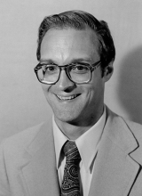

Please note: the AAS Obituaries are temporarily being hosted on this website while their full content is being ingested into the PubPub publishing platform newly adopted by the Bulletin of the American Astronomical Society. When the migration is complete, your existing links will take you to the final, migrated content. Contact peter.williams@aas.org with any questions.
Lee Will Simon (1940-2000)
Lee Will Simon, an astronomer by education, and a planetarium administrator by profession, was born on 18 February 1940 in Evanston, Illinois. He was the son of Clarence T. Simon, a professor of speech pathology at Northwestern University, and Dorothy née Will Simon, a homemaker, drama coach and published poet. Simon earned a Bachelor's degree in Mathematics (1962), a Master's degree in Astronomy (1964), and a Doctorate in Astronomy (1972), all from Northwestern University. His doctoral dissertation was on the spectroscopy of long-period variable stars. In 1969, Simon joined the Astronomy Department at the Adler Planetarium in Chicago where he led the exhibit development and sky show production efforts. Although he was a consummate lecturer, Simon gradually converted the staff from live to taped sky shows in the mid-1970s. He was the Adler’s Program Supervisor for nearly ten years before being appointed Morrison Planetarium director at the California Academy of Sciences in San Francisco.
Simon arrived at Morrison Planetarium in January of 1977 and immediately set about making changes. He succeeded Captain Robert Risser, who had led the planetarium for ten years and had established a substantial improvement fund. This fund allowed for some major upgrades to the planetarium theater, including a renovation of seats and carpeting and a modernization of the theater's electronic controls. Simon formalized the planetarium's production procedures and reinstated the planetarium's Artist position. He was the first PhD to head the Morrison Planetarium and was active in the Academy's Curator's Forum, serving as one of its first chairpersons. Simon was widely known as a lecturer with the ability to bring an understanding of astronomy to the layman and was an invited lecturer on total eclipse expeditions in Mexico, Russia, and Indonesia.
In the fall of 1981, Dr. Simon solicited reports from eight individuals, staff members and outside consultants, to help him determine the future direction for Morrison Planetarium. These reports proved to be invaluable as a basis for changes that would be made during the next ten years. Unfortunately, in February 1982 Simon suffered a stroke while he was on a family ski trip. He returned to work after recuperating for several months but was unable to resume his administrative duties. Simon was then appointed Staff Astronomer and served in that capacity for more than a year. His counsel during this time was very valuable in determining the planetarium's long-range plans. Simon retired from the planetarium in 1984.
For the next sixteen years, Simon involved himself in community service, mostly in California's Marin County, where he resided. He was active in Indian Guides, Cub Scouts, and Boy Scouts in Marin County. He was also an enthusiastic fundraiser for the Marin YMCA. He was a founding member of the Stroke Association of Marin and actively participated in classes at the Disabled Student Program at the College of Marin. He was a member of the St. Vincent de Paul Society at Our Lady of Loretto Church.
Simon died of leukemia on 18 January 2000. He is survived by Mary Jo, his wife of 34 years, and three sons: Daniel of Novato, California; Stephen of Los Angeles, California; and John with wife Jennifer and children Kaylee and James of Seattle, Washington.
Obituary written by: Steven B. Craig (Morrison Planetarium, San Francisco)
BAAS Citation: BAAS, 2002, 34, 1381
SAO/NASA ADS Bibcode: 2002BAAS...34.1381C